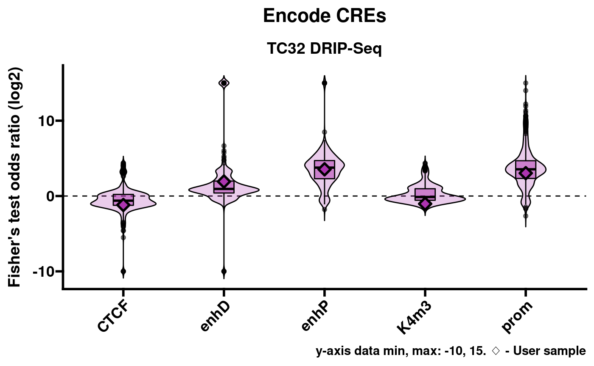

Analyzing R-loop data with RLSeq
Henry Miller
Alex Bishop Laboratory, UT Health San AntonioBioinformatics Research NetworkSource:
vignettes/RLSeq.Rmd
RLSeq.RmdAbstract
This vignette covers basic usage of RLSeq for evaluating data quality and analyzing R-loop locations. RLSeq is part of RLSuite, an R-loop analysis toolchain. RLSuite also includes RLHub, RLBase, and RLPipes.
Introduction 
RLSeq is a package for analyzing R-loop mapping data sets, and it is a core component of the RLSuite toolchain. It serves two primary purposes: (1) to facilitate the evaluation of data quality, and (2) to enable R-loop data analysis in the context of genomic annotations and the public data sets in RLBase. The main analysis steps can be conveniently run using the RLSeq() function. Then, an HTML report can be generated using the report() function. Individual steps of this pipeline are also accessible through separate functions which provide custom analysis capabilities.
This vignette will showcase the primary functionality of RLSeq with data from a publicly-available R-loop data mapping study in Ewing sarcoma cell lines, GSE68845. We have selected two DNA-RNA Immunoprecipitation sequencing (DRIP-seq) samples for demonstration purposes: (1) SRX1025890, a positive R-loop mapping sample (“POS”; condition: S9.6 -RNaseH1), and (2) SRX1025892, a negative control (“NEG”; condition S9.6 +RNaseH1). We will begin by showing a quick-start analysis on SRX1025890, and then we will proceed to discuss, in detail, the specific steps of this analysis with both samples.
Quick-start
Here, we demonstrate a simple analysis workflow which utilizes a publicly-available data set stored in RLBase (a database of R-loop consensus regions and R-loop-mapping experiments, also part of RLSuite). The commands below download these data, run RLSeq(), and generate the HTML report.
# Peaks and coverage can be found in RLBase
rlbase <- "https://rlbase-data.s3.amazonaws.com"
pks <- file.path(rlbase, "peaks", "SRX1025890_hg38.broadPeak")
cvg <- file.path(rlbase, "coverage", "SRX1025890_hg38.bw")
# Initialize data in the RLRanges object.
# Metadata is optional, but improves the interpretability of results
rlr <- RLRanges(
peaks = pks,
coverage = cvg,
genome = "hg38",
mode = "DRIP",
label = "POS",
sampleName = "TC32 DRIP-Seq"
)
# The RLSeq command performs all analyses
rlr <- RLSeq(rlr)
# Generate an html report
report(rlr, reportPath = "rlseq_report_example.html")The report generated by this code is found here.
Preliminary
Installation
RLSeq should be installed alongside RLHub to facilitate access to the data required for annotation and analysis. When downloading RLSeq from bioconductor, RLHub is already included.
if (!requireNamespace("BiocManager", quietly = TRUE))
install.packages("BiocManager")
BiocManager::install("RLSeq")Both packages can also be installed from github.
library(remotes)
install_github("Bishop-Laboratory/RLHub")
install_github("Bishop-Laboratory/RLSeq")Obtaining data
RLSeq is compatible with R-loop data generated from a variety of pipelines and tools. However, it is strongly recommended that you use RLPipes, a snakemake-based CLI pipeline tool built specifically for upstream processing of R-loop datasets.
RLPipes can be installed using mamba or conda (slower).
# conda install -c conda-forge mamba
mamba create -n rlpipes -c bioconda -c conda-forge rlpipes
conda activate rlpipesA typical config file (CSV) should be written as such:
| experiment |
|---|
| SRX1025890 |
| SRX1025892 |
And then the pipeline can be run.
RLPipes build -m DRIP rseq_out/ tests/test_data/samples.csv
RLPipes run rseq_out/The resulting directory will contain peaks/, coverage/, bam/, and other processed data sets which are used in downstream analysis.
Note: If you choose to use a different pipeline, use macs2/macs3 for peak calling to ensure compatibility with RLBase.
End-to-end RLSeq
Here, we describe each step of the analysis pipeline which is run as part of the RLSeq() command.
Data sets
For this example, we will be using DRIP-Seq data from a 2018 Nature paper on R-loops in Ewing sarcoma (Gorthi et al. 2018). The sample has been IP’d for R-loops (S9.6 -RNaseH1; label: “POS”). The data was processed using RLPipes and uploaded to RLBase. Peaks are converted to GRanges objects using a helper function from regioneR. URLs and file paths for peak files can also be supplied directly to without this step.
rlbase <- "https://rlbase-data.s3.amazonaws.com"
# Get peaks and coverage
s96Pks <- regioneR::toGRanges(file.path(rlbase, "peaks", "SRX1025890_hg38.broadPeak"))
s96Cvg <- file.path(rlbase, "coverage", "SRX1025890_hg38.bw")For demonstration purposes, only 10000 ranges are analyzed here.
# For expediency, peaks we filter and down-sampled to the top 10000 by padj (V9)
# This is not necessary as part of the typical workflow, however
s96Pks <- s96Pks[s96Pks$V9 > 2,]
s96Pks <- s96Pks[sample(names(s96Pks), 10000)]Finally, RLRanges objects were constructed. These are the primary objects used in all RLSeq functions. RLRanges are an extension of GRanges which provide additional metadata and validation functions.
## Build RLRanges ##
# S9.6 -RNaseH1
rlr <- RLRanges(
peaks = s96Pks,
coverage = s96Cvg,
genome = "hg38",
mode = "DRIP",
label = "POS",
sampleName = "TC32 DRIP-Seq"
)Sample quality
Sample quality is assessed by analyzing the association of peaks with R-loop-forming sequences (RLFS). RLFS are genomic sequences that favor the formation of R-loops (Jenjaroenpun et al. 2015). While R-loops can form outside RLFS, there is a strong relationship between them, which provides an unbiased test of whether a set of peaks actually represents successful R-loop mapping.
Permutation tests
RLSeq first implements a permutation test to evaluate the enrichment of peaks within RLFS and build a Z-score distribution around RLFS sites.
# Analyze RLFS for positive sample
rlr <- analyzeRLFS(rlr, quiet = TRUE)The resulting objects now contain the permutation test results. These results can be easily visualized with the plotRLFSRes function.
plotRLFSRes(rlr)
Plot of permutation test results (S9.6 -RNaseH1).
Quality classification
The quality classifier is an ensemble model based on an online-learning scheme. It predicts “POS” for samples which are predicted to show robust R-loop mapping and “NEG” for samples which are not. The latest version can be accessed via RLHub. For greater detail, please see the RLHub::modes reference. To apply the model and predict sample quality, use the predictCondition() function.
# Predict
rlr <- predictCondition(rlr)The results from testing our example samples:
## Prediction: POSFeature enrichment
The feature enrichment test assesses the enrichment of genomic features within a supplied R-loop dataset. The function queries the RLHub annotation database to retrieve genomic features, and then it performs fisher’s exact test and the relative distance test to assess feature enrichment (Favorov et al. 2012). For a description of all features, see RLHub::annotations.
# Perform test
rlr <- featureEnrich(
object = rlr,
quiet = TRUE
)The results:
# View Top Results
annoResS96 <- rlresult(rlr, "featureEnrichment")
annoResS96 %>%
relocate(contains("fisher"), .after = type) %>%
arrange(desc(stat_fisher_rl))## # A tibble: 50 × 13
## db type stat_fisher_rl stat_fisher_shuf pval_fisher_rl pval_fisher_shuf
## <chr> <chr> <dbl> <dbl> <dbl> <dbl>
## 1 Repeat… SINE Inf 1.23 1.58e-106 0.0264
## 2 Transc… Intr… Inf 1.01 2.23e-308 0.548
## 3 Transc… Exon 17.0 0.999 2.23e-308 0.978
## 4 Transc… TTS 16.8 1.00 2.23e-308 0.937
## 5 Transc… TSS 15.1 1.05 2.23e-308 0.229
## 6 Encode… enhP 12.1 1.05 2.23e-308 0.221
## 7 knownG… prot… 11.9 0.997 2.23e-308 0.895
## 8 PolyA poly… 10.4 0.932 2.23e-308 0.375
## 9 Transc… thre… 9.63 1.05 2.23e-308 0.372
## 10 PolyA poly… 9.15 0.904 2.23e-308 0.257
## # … with 40 more rows, and 7 more variables: num_tested_peaks <int>,
## # num_total_peaks <int>, num_tested_anno_ranges <int>,
## # num_total_anno_ranges <int>, avg_reldist_rl <dbl>, avg_reldist_shuf <dbl>,
## # pval_reldist <dbl>From the results, we see that there is high enrichment within genic features, such as exons and introns.
Visualization of enrichment results
RLSeq provides a helper function, plotEnrichment, to facilitate the visualization of enrichment results.
pltlst <- plotEnrichment(rlr)This returns a list of plots named according to the corresponding annotation database. For example, Encode cis-regulatory elements (CREs):
pltlst$Encode_CREs
Note: Caveat on data range
A limitation of this approach is that Fisher’s exact test sometimes returns Inf or -Inf for the statistic (odds ratio). While these results are useful in demonstrating robust enrichment or non-enrichment, they are difficult to plot in a meaningful way. As a compromise, plotEnrichment sets a limited data range of -10 through 15. These values were chosen because they encompass every finite value that can be returned from the implementation of Fisher’s test which RLSeq uses. In the above plots Inf results are shown on the y-axis at value 15 and, likewise, -Inf is shown at -10.
Correlation analysis
Correlation analysis finds inter-sample correlation coefficients of bin-level R-loop signal around gold-standard R-loop sites (sites profiled using ultra-long-read R-loop mapping – “SMRF-Seq”) (Chédin et al. 2021). This analysis helps to answer the question “how well does my data agree with previous results in public datasets?” For greater detail, please refer to the documentation for corrAnalyze().
Note: corrAnalyze() does not work on Windows OS systems.
# corrAnalyze does not work on Windows OS
if (.Platform$OS.type != "windows") {
rlr <- corrAnalyze(rlr)
}The results of this analysis are visualized using corrHeatmap.
# corrAnalyze does not work on Windows OS
if (.Platform$OS.type != "windows") {
corrHeatmap(rlr)
}These results demonstrate that our sample correlates well with similar DRIP-Seq data sets.
Gene Annotation
Gene annotations are automatically downloaded using AnnotationHub() and then intersected with RLRanges.
rlr <- geneAnnotation(rlr)R-Loop Region Test
R-loop regions are consensus R-loop-forming sites discovered from analyzing all high-confidence R-loop mapping samples in RLBase. The rlRegionTest() analyzes the enrichment of the ranges in our RLRanges object with these consensus R-loop sites, which, like correlation analysis, also helps answer the question “how well does my data agree with previous results?” For greater detail, please refer to the documentation for rlRegionTest().
rlr <- rlRegionTest(rlr)The test results can be easily visualized in the following manner.
# Plot overlap
plotRLRegionOverlap(
object = rlr,
# Arguments for VennDiagram::venn.diagram()
fill = c("#9ad9ab", "#9aa0d9"),
main.cex = 2,
cat.pos = c(-40, 40),
cat.dist=.05,
margin = .05
)
Accessing RLBase data
For convenience, we also provide pre-analyzed RLRanges objects for every sample in RLBase. To access them, you need only provide the ID of the sample which you want to obtain data from. These IDs, along with other metadata, are listed in RLHub::rlbase_samples().
rlr <- RLRangesFromRLBase(acc = "SRX1025890")
rlr## GRanges object with 107029 ranges and 6 metadata columns:
## seqnames ranges strand | V4 V5
## <Rle> <IRanges> <Rle> | <character> <integer>
## 1 chr1 10034-10345 * | /home/UTHSCSA/miller.. 40
## 2 chr1 180610-181657 * | /home/UTHSCSA/miller.. 53
## 3 chr1 182752-182950 * | /home/UTHSCSA/miller.. 38
## 4 chr1 184149-184628 * | /home/UTHSCSA/miller.. 28
## 5 chr1 629787-630103 * | /home/UTHSCSA/miller.. 42
## ... ... ... ... . ... ...
## 107025 chrY 11293162-11294964 * | /home/UTHSCSA/miller.. 38
## 107026 chrY 11295281-11296131 * | /home/UTHSCSA/miller.. 36
## 107027 chrY 11297625-11297944 * | /home/UTHSCSA/miller.. 23
## 107028 chrY 11301521-11301748 * | /home/UTHSCSA/miller.. 20
## 107029 chrY 26641735-26642007 * | /home/UTHSCSA/miller.. 15
## V6 V7 V8 qval
## <character> <numeric> <numeric> <numeric>
## 1 . 4.17431 6.16893 4.04326
## 2 . 4.63235 7.59510 5.31977
## 3 . 4.21966 5.95157 3.81400
## 4 . 3.57860 4.84694 2.87393
## 5 . 2.59231 6.38817 4.27687
## ... ... ... ... ...
## 107025 . 2.33249 5.86578 3.81115
## 107026 . 2.18689 5.72732 3.67967
## 107027 . 2.45115 4.20891 2.32963
## 107028 . 2.98060 3.91975 2.09600
## 107029 . 2.80910 3.30759 1.56104
## -------
## seqinfo: 595 sequences (1 circular) from hg38 genome
##
## SRX1025890:
## Mode: DRIP
## Genome: hg38
## Label: POS
##
## RLSeq Results Available:
## featureEnrichment, correlationMat, rlfsRes, geneAnnoRes, predictRes, rlRegionRes
##
## prediction: POSSession
Session info
## R version 4.1.1 (2021-08-10)
## Platform: x86_64-pc-linux-gnu (64-bit)
## Running under: Ubuntu 20.04.3 LTS
##
## Matrix products: default
## BLAS: /usr/lib/x86_64-linux-gnu/blas/libblas.so.3.9.0
## LAPACK: /usr/lib/x86_64-linux-gnu/lapack/liblapack.so.3.9.0
##
## locale:
## [1] LC_CTYPE=en_US.UTF-8 LC_NUMERIC=C
## [3] LC_TIME=en_US.UTF-8 LC_COLLATE=en_US.UTF-8
## [5] LC_MONETARY=en_US.UTF-8 LC_MESSAGES=en_US.UTF-8
## [7] LC_PAPER=en_US.UTF-8 LC_NAME=C
## [9] LC_ADDRESS=C LC_TELEPHONE=C
## [11] LC_MEASUREMENT=en_US.UTF-8 LC_IDENTIFICATION=C
##
## attached base packages:
## [1] stats4 stats graphics grDevices utils datasets methods
## [8] base
##
## other attached packages:
## [1] GenomicFeatures_1.45.2 AnnotationDbi_1.55.2 Biobase_2.53.0
## [4] GenomicRanges_1.45.0 RLHub_0.99.6 GenomeInfoDb_1.29.10
## [7] IRanges_2.27.2 S4Vectors_0.31.5 BiocGenerics_0.39.2
## [10] dplyr_1.0.7 RLSeq_0.99.9 BiocStyle_2.21.4
##
## loaded via a namespace (and not attached):
## [1] utf8_1.2.2 tidyselect_1.1.1
## [3] RSQLite_2.2.8 htmlwidgets_1.5.4
## [5] grid_4.1.1 BiocParallel_1.27.17
## [7] pROC_1.18.0 aws.signature_0.6.0
## [9] munsell_0.5.0 codetools_0.2-18
## [11] ragg_1.1.3 DT_0.19
## [13] future_1.22.1 withr_2.4.2
## [15] colorspace_2.0-2 filelock_1.0.2
## [17] highr_0.9 knitr_1.36
## [19] rstudioapi_0.13 listenv_0.8.0
## [21] MatrixGenerics_1.5.4 labeling_0.4.2
## [23] GenomeInfoDbData_1.2.7 bit64_4.0.5
## [25] farver_2.1.0 rprojroot_2.0.2
## [27] parallelly_1.28.1 vctrs_0.3.8
## [29] generics_0.1.0 lambda.r_1.2.4
## [31] ipred_0.9-12 xfun_0.27
## [33] BiocFileCache_2.1.1 randomForest_4.6-14
## [35] regioneR_1.25.1 R6_2.5.1
## [37] doParallel_1.0.16 clue_0.3-60
## [39] gridGraphics_0.5-1 bitops_1.0-7
## [41] cachem_1.0.6 DelayedArray_0.19.4
## [43] assertthat_0.2.1 promises_1.2.0.1
## [45] BiocIO_1.3.0 scales_1.1.1
## [47] nnet_7.3-16 gtable_0.3.0
## [49] valr_0.6.3 globals_0.14.0
## [51] processx_3.5.2 timeDate_3043.102
## [53] rlang_0.4.12 systemfonts_1.0.3
## [55] GlobalOptions_0.1.2 splines_4.1.1
## [57] rtracklayer_1.53.1 ModelMetrics_1.2.2.2
## [59] broom_0.7.9 BiocManager_1.30.16
## [61] yaml_2.2.1 reshape2_1.4.4
## [63] backports_1.2.1 httpuv_1.6.3
## [65] caret_6.0-90 tools_4.1.1
## [67] lava_1.6.10 bookdown_0.24
## [69] ggplotify_0.1.0 ggplot2_3.3.5
## [71] ellipsis_0.3.2 jquerylib_0.1.4
## [73] RColorBrewer_1.1-2 Rcpp_1.0.7
## [75] plyr_1.8.6 base64enc_0.1-3
## [77] progress_1.2.2 zlibbioc_1.39.0
## [79] purrr_0.3.4 RCurl_1.98-1.5
## [81] ps_1.6.0 prettyunits_1.1.1
## [83] rpart_4.1-15 GetoptLong_1.0.5
## [85] pbapply_1.5-0 cluster_2.1.2
## [87] SummarizedExperiment_1.23.5 fs_1.5.0
## [89] magrittr_2.0.1 futile.options_1.0.1
## [91] magick_2.7.3 data.table_1.14.2
## [93] caretEnsemble_2.0.1 circlize_0.4.13
## [95] matrixStats_0.61.0 hms_1.1.1
## [97] mime_0.12 evaluate_0.14
## [99] xtable_1.8-4 XML_3.99-0.8
## [101] VennDiagram_1.6.20 gridExtra_2.3
## [103] shape_1.4.6 compiler_4.1.1
## [105] biomaRt_2.49.7 tibble_3.1.5
## [107] crayon_1.4.1 htmltools_0.5.2
## [109] later_1.3.0 tzdb_0.1.2
## [111] ggprism_1.0.3 tidyr_1.1.4
## [113] lubridate_1.8.0 aws.s3_0.3.21
## [115] DBI_1.1.1 formatR_1.11
## [117] ExperimentHub_2.1.4 dbplyr_2.1.1
## [119] ComplexHeatmap_2.9.4 MASS_7.3-54
## [121] rappdirs_0.3.3 Matrix_1.3-4
## [123] readr_2.0.2 cli_3.0.1
## [125] parallel_4.1.1 gower_0.2.2
## [127] pkgconfig_2.0.3 pkgdown_1.6.1
## [129] GenomicAlignments_1.29.0 recipes_0.1.17
## [131] xml2_1.3.2 foreach_1.5.1
## [133] bslib_0.3.1 XVector_0.33.0
## [135] prodlim_2019.11.13 yulab.utils_0.0.4
## [137] stringr_1.4.0 callr_3.7.0
## [139] digest_0.6.28 Biostrings_2.61.2
## [141] rmarkdown_2.11 restfulr_0.0.13
## [143] curl_4.3.2 kernlab_0.9-29
## [145] shiny_1.7.1 Rsamtools_2.9.1
## [147] rjson_0.2.20 lifecycle_1.0.1
## [149] nlme_3.1-153 jsonlite_1.7.2
## [151] futile.logger_1.4.3 desc_1.4.0
## [153] BSgenome_1.61.0 fansi_0.5.0
## [155] pillar_1.6.4 lattice_0.20-44
## [157] KEGGREST_1.33.0 fastmap_1.1.0
## [159] httr_1.4.2 survival_3.2-13
## [161] interactiveDisplayBase_1.31.2 glue_1.4.2
## [163] png_0.1-7 iterators_1.0.13
## [165] BiocVersion_3.14.0 bit_4.0.4
## [167] class_7.3-19 stringi_1.7.5
## [169] sass_0.4.0 blob_1.2.2
## [171] textshaping_0.3.6 AnnotationHub_3.1.6
## [173] memoise_2.0.0 future.apply_1.8.1